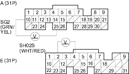
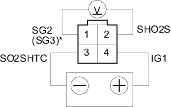

DTC 63: Secondary HO2S (Sensor 2) Circuit Malfunction
NOTE: Information marked with an asterisk (*) applies to D15Y4, D17A2 (KU, KQ, KZ, FO models), D17Z1 (KQ model) engines.
- Reset the ECM/PCM (see page 11-168).
- Jump the SCS line (see step 2 on page 11-167).
- Start the engine. Hold the engine at 3,000 rpm (min-1) with no load (in Park or neutral) until the radiator fan comes on, then let it idle for at least 1 minute before test-driving.
Is the MIL on and does it indicate DTC 63?
YES |
- Go to step 4. |
NO |
- Intermittent failure, system is OK at this time. Check for poor connections or loose wires at the secondary HO2S (Sensor 2) and at the ECM/PCM. |

- Inspect fuel pressure (see page 11-131).
Is it normal?
YES |
- Go to step 5. |
NO |
- Check for fuel supply system (see page 11-287). |
- Let it idle for at least 1 minute before test-driving.
- Open the throttle wide open, then quickly release it.
- Measure voltage between ECM/PCM connector terminals A10 and A25 (E2 and E4)*.

YES |
- Substitute a known-good ECM/PCM and recheck. If symptom/indication goes away, replace the original ECM/PCM. |
NO |
- Go to step 7. |
- Turn the ignition switch OFF.
- Disconnect the secondary HO2S (Sensor 2) 4P connector.
- At the secondary HO2S (Sensor 2) harness side, connect the battery positive terminal to terminal No. 4 and battery negative terminal to terminal No. 3.
- Start the engine.
- After 2 minutes, measure voltage between secondary HO2S (Sensor 2) 4P connector terminals No. 1 and No. 2.

Is the voltage above 0.6 V at wide open throttle to 4,500 rpm (min-1) and below 0.4 V when the throttle is quickly released from 4,500 rpm (min-1)?
YES |
- Repair open or short in the wire between the ECM/PCM (A10, A25) (E2, E4)* and the secondary HO2S (Sensor 2). |
NO |
- Replace the secondary HO2S (Sensor 2) (see page 11-279). |